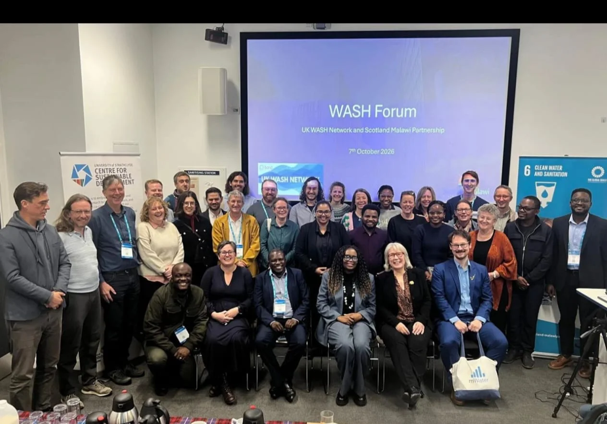
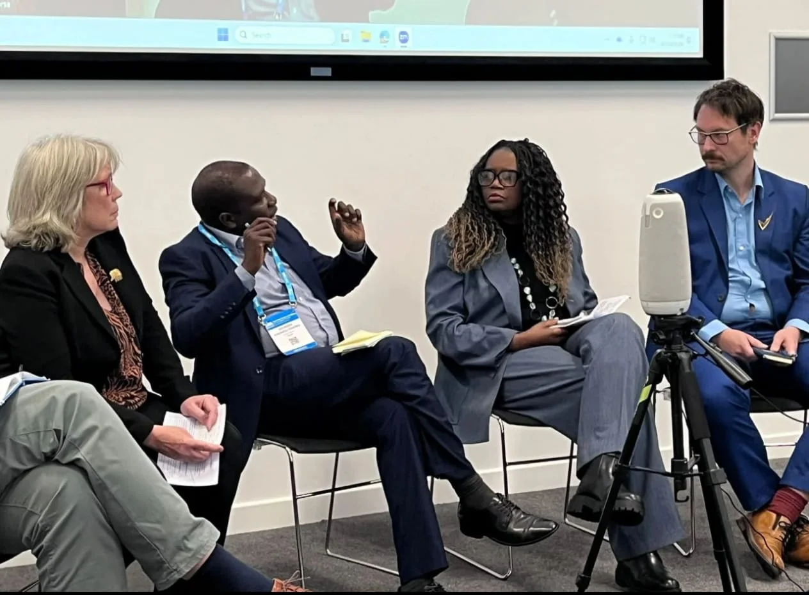

UKWN SMP panel session
Beyond Aid: Building New Alliances for the Future of WASH
I joined a panel exploring how constrained aid, climate resilience, health, agriculture, and economic development are reshaping the alliances behind WASH. The session brought together approximately 100 participants online and in person.
My contribution focused on how AI may reduce the cost of creating software, collecting and verifying data, and coordinating institutions; how stronger evidence could connect finance to verified performance and climate resilience; and why control of expanding data flows makes data sovereignty a consequential source of power.
I also argued that the individual may be the most underestimated actor in WASH: technology can give a utility engineer, civil servant, or small ambitious team capabilities that once required a much larger organisation. I closed by calling for closer collaboration with people building AI agents, resource-discovery and assurance systems, digital public goods, and public-interest technology.
Panellist · Petri Autio, Head of Product at mWater and Solstice

